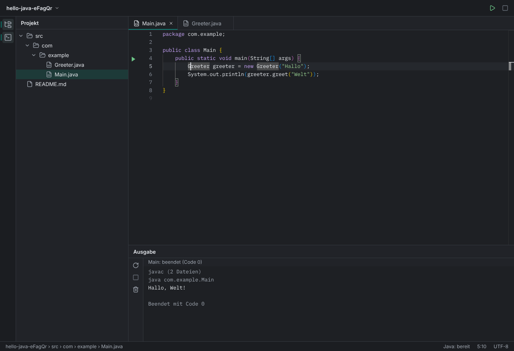

Java schreiben und ausführen. Ohne Umweg.
Eine kleine Desktop-IDE: Projekt öffnen, mit Vervollständigung schreiben, mit einem Klick ausführen. Kein Konto, keine Telemetrie.
Quellcode ansehen
Warum es Hobel gibt
Hobel ist ein Lernprojekt. Es baut den Kern einer Java-IDE nach, Schritt für Schritt und offen dokumentiert: wie Editor, Language Server, Prozesse und Dateien zusammenspielen.
So geht's
Ordner öffnen
Hobel zeigt den Projektbaum und merkt sich das Projekt.
Vertrauen oder nicht
„Ja, vertrauen“ startet Code-Analyse und Ausführen. „Ohne Ausführen“ lässt dich lesen und bearbeiten, ohne dass Code aus dem Ordner läuft.
Shift+F10
Hobel kompiliert und startet die Klasse. Zeilen im Stacktrace sind Links in den Code.
Was Hobel kann
Erst fragen, dann ausführen
Kein Build-Skript, kein Language Server, kein Programm läuft, bevor du dem Ordner vertraust.
Nichts geht still verloren
Beim Schließen mit ungespeicherten Dateien fragt Hobel. Hat sich eine Datei auf der Platte geändert, überschreibt Speichern sie nicht ungefragt.
Ein Klick zum Lauf
Das Symbol neben main startet sofort, die Ausgabe läuft live mit, Ctrl+F2 stoppt.
Java-Wissen eingebaut
Vervollständigung, Fehler beim Tippen, Doku beim Drüberfahren und Sprung zur Definition, über den Eclipse JDT Language Server.
Bleibt auf deinem Rechner
Kein Konto, keine Telemetrie, Hobel selbst ruft keinen Server auf. Einzige Ausnahme: Der mitgelieferte Java-Server fragt beim Start einmal die öffentliche Liste der Gradle-Versionen ab.
Mit der Tastatur bedienbar
Projektbaum, Tabs, Ausführen und Dialoge gehen per Tastatur; die Oberfläche wird automatisch auf Barrierefreiheit geprüft.
Was es kostet
Fragen
- Welche Sprachen?
- Java. Andere Sprachen kämen über weitere Language Server, sind aber nicht gebaut.
- Gradle oder Maven?
- Hobel erkennt
src/main/java, importiert aber noch keine Build-Dateien. Abhängigkeiten aus Gradle oder Maven fehlen deshalb in der Analyse. - Debugger, Git, Suche über alle Dateien?
- Noch nicht. Heute kann Hobel 12 von 30 Grundfunktionen vollständig; die Liste steht offen im Repository.
- Was brauche ich?
- Node 22.13 oder neuer und ein JDK 21 oder neuer.
- Linux, macOS, Windows?
- Getestet ist Linux. macOS und Windows sollten laufen, sind aber nicht geprüft.
- Ersetzt Hobel meine IDE?
- Nein, heute nicht. Es ist zum Lernen und Ausprobieren da.
- Lizenz?
- Noch offen.
Hobel ist klein und offen gebaut.
Schau rein, probier es aus.
Quellcode ansehen